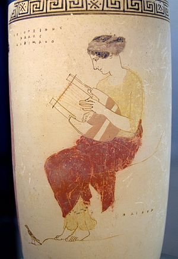

Походження

Прадавніми попередниками гітари є стародавні струнні щипкові інструменти з шийкою, що з'явилися в глибокій старовині. Найдавніші зображення щипкових інструментів знайдені на глиняних барельєфах Месопотамії (2 тисячоліття до н. е.) та на фризі буддійського монастиря Ертама поблизу Термеза (Узбекистан) (1 тисячоліття до н. е.). Значно подібнішими за конструкцією до гітари вважаються стародавні китайські інструменти — юань, що відносяться до 3-го тисячоліття до нашої ери — вони мали верхню та нижню деки та дві обичайки, що їх з'єднували
Сама назва гітара ймовірно має давньогрецьке походження (κιθάρα) і вживалася щодо щипкового інструмента, схожого на ліру, сучасною українською цей інструмент називають кіфарою. Пізніше грецьке слово потрапило до латинської мови (cithara), арабської (قيثارة), іспанської (guitarra), звідки вже було запозичене іншими європейськими мовами, в тому числі й українською
«Кіфара» (κιθάρα) чотири рази згадується в Новому заповіті, проте в перекладах різними мовами перекладається по-різному: в англомовних як «арфа» (англ. harp), а в україномовних — як «гусла» (в «Одкровенні») або «лютня» (І. Огієнко), «цитра» (І. Хоменко) і навіть «кобза» (П. Куліш
Безпосередніми ж попередниками іспанської гітари ймовірно були європейська лютня і чотириструнний уд; останній був принесений маврами до Іберії у 8 столітті.
У 1200 році в Іспанії були відомі принаймні два інструменти, що називалися гітарами — латинська і мавританська (guitarra moresca). Мавританська мала заокруглену нижню деку, широкий гриф, і кілька резонаторних отворів, латинська натомість мала один резонаторний отвір і вужчу шию. З 14 століття означення «мавританська» і «латинська» вийшли з ужитку й обидва інструменти називалися гітарами.
У 15-16 століттях значний вплив на становлення барокової гітари зробила іспанська віуела «viola da mano». Віуела мала шість подвійних струн, що настроювались подібно як у лютні через кварту, а також подібний до гітарного корпус, хоча раннім інструментам характерне загострене звуження корпусу. Віуела була більшою, ніж сучасні гітари з чотирма подвійними струнами. У 16 столітті конструкція віуели мала більше спільного з сучасною гітарою, з її заокругленими і суцільними ребрами, ніж з альтом. Втім період популярності віуели в Італії та Іспанії був порівняно коротким, тоді як домінуючим інструментом в Європі тієї епохи була лютня, а останні опубліковані ноти для віуели датуються 1576 роком.